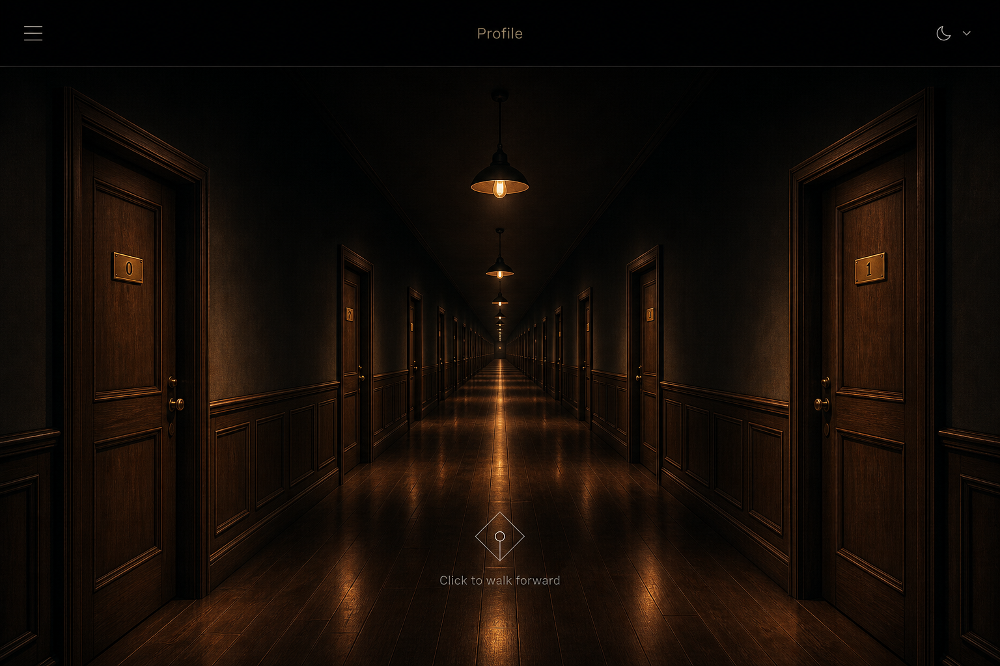
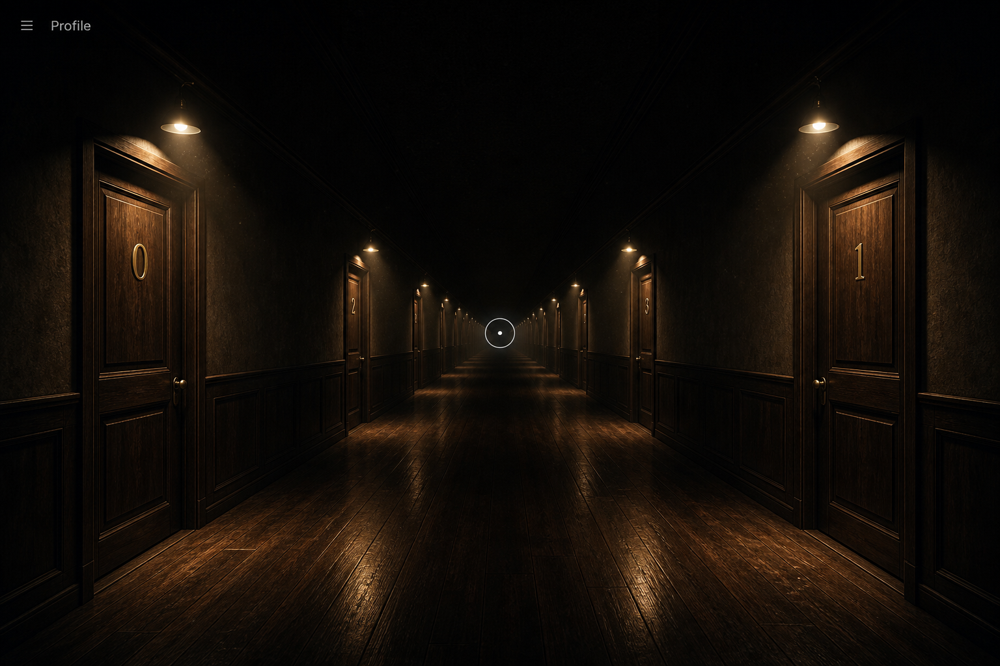
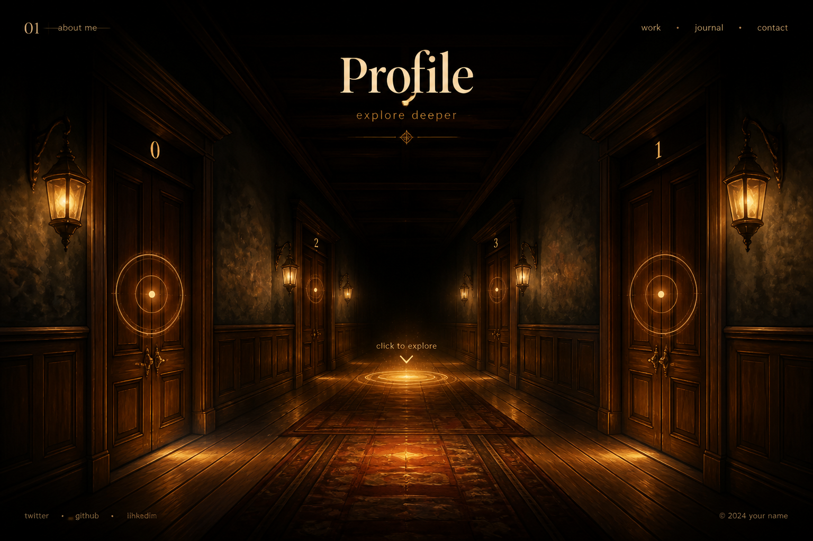

方案 A
CSS 3D 走廊
几何平面透视，Web 感强。与 MechAssist 栈完全同源，无 WebGL。
进入页面就是一条暗黑走廊：近大远小、灭点在正前方。以下为历史三方案对照。 已锁定见下方黄框。
方案 B 真 3D（相机前进/转身、门绕铰链打开）+ 方案 A 天花中线暖灯与中轴文字提示（不要圆圈）。 英文名 Profile。第一期无后端、无物理。4 对门。点门进入房间页（开门 + 灯闪约 10 秒 + 桌凳/左画/右黑板）。
执行文档：Main_Page/Start · 房间：door_Page · 锁定表：已选定方案.md

几何平面透视，Web 感强。与 MechAssist 栈完全同源，无 WebGL。

点光源真实照到门和墙半截。视觉最接近文字需求。

概念画分层缩放。出氛围最快，走路感最弱。
| 层 | 方案 A · CSS 3D | 方案 B · Three.js | 方案 C · 2.5D |
|---|---|---|---|
| 前端 | Vite 5 + React 18 + React Router 6 | 同上 + React Three Fiber + drei + Three.js | Vite 5 + React 18（可先纯 HTML 再包） |
| UI | Tailwind 3 + lucide-react；走廊用 CSS perspective | Tailwind 做 HUD；场景内 Mesh + PointLight | Tailwind + 分层图 + HTML 热区 / 门牌 |
| 动效 | CSS transition / translateZ 一档 | 相机沿走廊 Z 轴 lerp | GSAP 拉近、切到下一层门对 |
| 状态 | zustand（stopIndex + rooms） | zustand（同上，驱动相机目标） | React state 或 zustand |
| 后端 | Express 4 + better-sqlite3 + JWT（对齐 extern-api） | 同方案 A，数据不绑 3D 引擎 | 第一期静态 JSON；第二期再 Express |
| 接口形状 | GET /api/rooms 、 GET /api/rooms/:id 。字段含 id、side、stopIndex、label（门牌可中英数）。 | ||
| 部署 | Vite dist + Express，concurrently 本地联调 | 同左；贴图走 public/，注意 gzip | 可纯静态；有 API 后再加 Express |
| 第一期工作量 | 中 | 高 | 低 |
参考仓库：MechAssist-Fusion / extern-api（Vite React Tailwind Express SQLite）与 mcp-gaode（深色 UI #0B0F14）。
stopIndex = 0 时左右为门 0 / 1；点击走廊中轴后 stopIndex = 1，左右为门 2 / 3。label 只是展示文案。
leftDoor = rooms[stopIndex * 2] rightDoor = rooms[stopIndex * 2 + 1] click corridor center → stopIndex += 1 → 镜头到下一对门正前 click a door → 后期进入该房间（本期可先高亮） back → stopIndex -= 1（到 0 停止）
选定后把实现写进仓库的 Code/ 目录。本页只是方案，还没有可点的走廊代码。